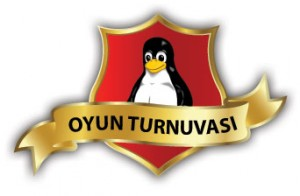

Oyun Turnuvası

Etkinlik alanında her iki gün de, gün içinde sonuçlanan oyun turnuvaları düzenleniyor.
1 Nisan Cuma
|
|
Hedgewars
Başvuru adedine göre iki tur oynanacak şekilde aynı anda X kişi oynatılacak, ön elemeyi geçenler finalde yine aynı şekilde aynı anda oynayacak ve sıralama ona göre yapılacak. |
 |
GnuJump
Herkesin gün boyu oyunlarında 3 kere deneme hakkı olacak, en iyi derece geçerli sayılacak. En çok puanı alan en kısa sürede alan başta olmak üzere sıralanacak. |
2 Nisan Cumartesi
|
|
Frozen Bubble
Başvuru sayısına göre iki tur oynanacak şekilde aynı anda x kişi oynatılacak, ön elemeyi geçenler finalde yine aynı şekilde aynı anda oynayacak ve sıralama ona göre yapılacak |
|
UrbanTerror
Oyun modu free-for-all, oynanacak, Oyuncu sayısına göre dereceye girenler bir sonraki tura katılacak. Finalde derece alanlar ödüllendirilecek |
Turnuvaya kayıtlar sadece etkinlik alanında alınıyor, herkesin 1 oyuna 1 kere katılma hakkı bulunuyor.